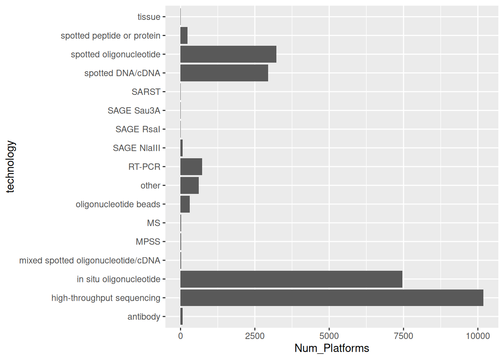
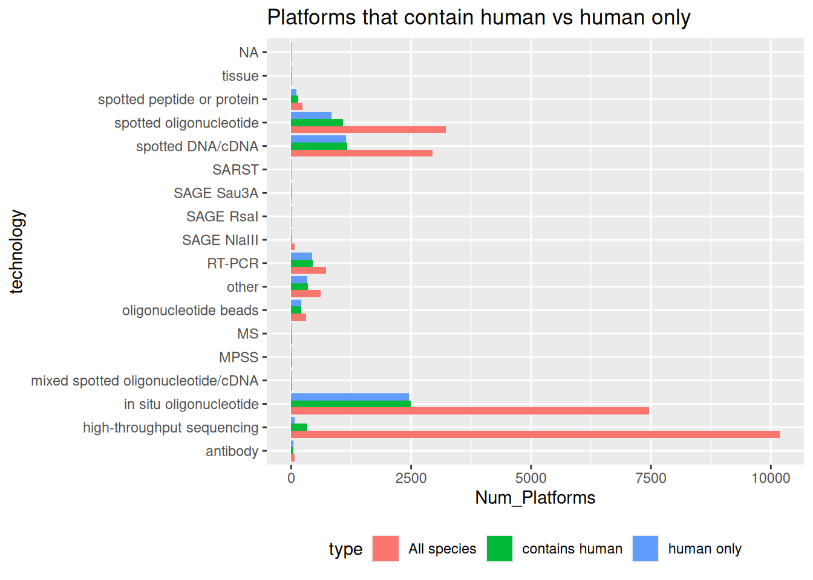

Chapter 4 Exploring Platforms (GPL)
How many platforms exist, and what technologies do they use?
## n
## 1 25880## [1] 18num_uniq_tech <- dbGetQuery(con, 'select technology, count(*) as Num_Platforms from gpl group by technology')
# Quick plot
library(ggplot2)
plot_df <- subset(num_uniq_tech, !is.na(technology))
ggplot(plot_df, aes(x = technology, y = Num_Platforms)) +
geom_col() + coord_flip()
4.1 Restrict to human
num_uniq_tech_human <- dbGetQuery(con, "select technology, count(*) as Num_Platforms from gpl where organism = 'Homo sapiens' group by technology order by Num_Platforms desc")
num_uniq_tech_contain_human <- dbGetQuery(con, "select technology, count(*) as Num_Platforms from gpl where organism like '%Homo sapiens%' group by technology order by Num_Platforms desc")
library(dplyr)##
## Attaching package: 'dplyr'## The following objects are masked from 'package:stats':
##
## filter, lag## The following objects are masked from 'package:base':
##
## intersect, setdiff, setequal, unionuniq_tech_all <- bind_rows(
transform(num_uniq_tech_human, type = 'human only'),
transform(num_uniq_tech_contain_human, type = 'contains human'),
transform(num_uniq_tech, type = 'All species')
)
ggplot(uniq_tech_all, aes(technology, Num_Platforms, fill = type)) +
geom_col(position = 'dodge') + coord_flip() +
theme(legend.position = 'bottom') +
ggtitle('Platforms that contain human vs human only')